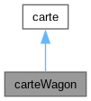

Représente une carte wagon dans le jeu Une carte wagon a une couleur spécifique qui est définie par l'énumération couleur_e. Elle est utilisée pour emprunter les rails entre les villes sur le plateau de jeu. Elle hérite de la classe carte, ce qui permet de la traiter de manière polymorphique avec d'autres types de cartes dans le jeu. More...
#include <cartewagon.hpp>


Public Member Functions | |
| carteWagon (couleur_e couleur) | |
| Construit une nouvelle carte wagon avec une couleur spécifique. | |
| couleur_e | getCouleur () |
| Renvoie la couleur de la carte wagon. | |
Detailed Description
Représente une carte wagon dans le jeu Une carte wagon a une couleur spécifique qui est définie par l'énumération couleur_e. Elle est utilisée pour emprunter les rails entre les villes sur le plateau de jeu. Elle hérite de la classe carte, ce qui permet de la traiter de manière polymorphique avec d'autres types de cartes dans le jeu.
Constructor & Destructor Documentation
◆ carteWagon()
| carteWagon::carteWagon | ( | couleur_e | couleur | ) |
Construit une nouvelle carte wagon avec une couleur spécifique.
- Parameters
-
couleur
Member Function Documentation
◆ getCouleur()
| couleur_e carteWagon::getCouleur | ( | ) |
Renvoie la couleur de la carte wagon.
- Returns
- couleur_e
The documentation for this class was generated from the following file:
- /home/thomas/Documents/SMP/smp-tp11-note-charles-thomasd-noah-simon/include/cartewagon.hpp